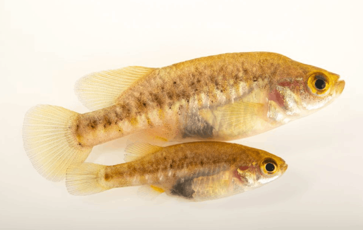

Systématique
- Ordre : Cyprinodontiformes
- Famille : Goodeidae
- Genre : Allotoca
- Espèce : A. zacapuensis
- Auteur : Meyer, Radda & Domínguez, 2001

Allotoca zacapuensis est un petit poisson vivipare endémique de la lagune de Zacapu, dans l'État de Michoacán au Mexique. C'est l'un des membres les plus localisés et les plus menacés de la famille des Goodeidae, classé en danger critique d'extinction (CR) en raison de sa distribution extrêmement restreinte.
Morphologiquement, cette espèce est assez compacte. Le mâle mesure généralement entre 3 et 4 cm de longueur standard, tandis que la femelle peut atteindre 5 cm. Sa coloration est caractéristique : le corps présente une teinte gris-olive à argentée avec une série de barres verticales sombres sur les flancs, plus marquées chez les individus dominants et les mâles. Contrairement à d'autres Allotoca, les écailles présentent des reflets métalliques bleutés ou verdâtres sous certains angles. Les nageoires sont globalement translucides avec des liserés légèrement plus sombres chez le mâle.
Allotoca zacapuensis est une espèce timide et benthopélagique qui vit en étroite association avec les herbiers aquatiques denses de son habitat. Il passe la majeure partie de son temps à l'abri de la végétation, sortant rarement en pleine eau. C'est un poisson social qui gagne à être maintenu en groupe.
Dans son milieu naturel, il cohabite avec d'autres espèces endémiques de la lagune. Son comportement est pacifique, bien que les mâles puissent parader entre eux sans agression physique majeure. En raison de sa sensibilité environnementale, il ne supporte pas la concurrence d'espèces invasives ou trop actives.
Mode : Vivipare (viviparité trophotaéniale). Les embryons se développent à l'intérieur de la femelle et sont nourris via des structures appelées trophotaeniae.
La gestation dure environ 55 à 65 jours selon la température. Les portées sont relativement petites, comptant généralement entre 10 et 20 alevins. Les nouveau-nés sont grands (environ 10-12 mm) et naissent avec des trophotaeniae encore attachées, qui se résorbent en quelques heures. Les parents ignorent généralement leur progéniture dans un bac bien planté, permettant un élevage en cycle naturel. Le GWG préconise des températures modérées pour assurer une reproduction saine et éviter l'épuisement des femelles.
Dimorphisme sexuel : Bien défini. Le mâle possède un andropode (nageoire anale modifiée dont les premiers rayons sont séparés par une encoche). Il est également plus petit, plus svelte et arbore des motifs plus contrastés. La femelle est plus corpulente, avec une zone abdominale plus arrondie et une coloration plus terne, axée sur le camouflage.
Espérance de vie : 3 à 5 ans en conditions optimales. Des températures trop élevées réduisent significativement cette durée.
L'espèce est confinée exclusivement à la Laguna de Zacapu et ses sources adjacentes. Ce biotope se caractérise par des eaux cristallines alimentées par des sources souterraines, avec une température très stable tout au long de l'année (autour de 19-21°C). Le courant y est quasi inexistant.
La végétation est luxuriante, dominée par des genres tels que Ceratophyllum, Potamogeton et Scirpus. Le substrat est principalement composé de boue organique et de débris végétaux. La qualité de l'eau est cruciale : elle est riche en oxygène et affiche une dureté moyenne à élevée. L'urbanisation et le prélèvement d'eau autour de la lagune constituent les principales menaces pour ce micro-écosystème.
Répartition

Origine naturelle :
- Mexique : État de Michoacán.
- Localité : Laguna de Zacapu (Laguna et canaux environnants).
- Espèce micro-endémique avec une zone d'occurrence inférieure à 10 km².
Statut UICN : En danger critique d'extinction. L'espèce dépend entièrement de la préservation de la qualité de l'eau de la lagune de Zacapu.
Paramètres de maintenance
Température : 18 à 22 °C. Une température stable est préférable car l'habitat d'origine est alimenté par des sources.
pH : 7,2 à 8,2 (eau alcaline).
GH : 10 à 20 °dGH (eau moyennement dure à dure).
Courant : Très faible ou nul.
Volume conseillé : Minimum 60-80 litres pour un groupe. Bac spécifique avec une végétation extrêmement dense (mousses, plantes flottantes).
Régime alimentaire
Régime : Omnivore à prédominance carnivore (insectivore).
Dans la nature, il se nourrit de micro-invertébrés, de larves d'insectes et de petits crustacés trouvés dans la végétation. En aquarium, il accepte les aliments secs de haute qualité, mais les proies vivantes ou congelées (cyclops, daphnies, artémias) sont essentielles pour sa santé et la stimulation de la reproduction.